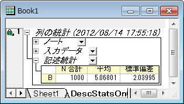
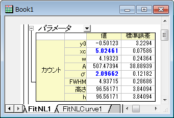
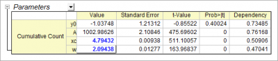

確率密度関数と累積分布関数による分布フィット
サマリー
データの統計検定を行うと、サンプル分布のスケールや位置を知る事ができます。また、確率密度関数を使ってビン化したデータをフィットすると、これらの値を入手できます。このチュートリアルはこれらのパラメータを曲線フィットからどのように推定するか示します。
必要なOriginのバージョン: Origin 2016 SR6以降
学習する項目
- フィットによる一般的なデータ分布の作成
- 確率密度関数によるフィット(PDF)
- 累積分布関数によるフィット(CDF)
サンプルとステップ
フィットによる一般的なデータ分布の作成
- 以下のスクリプトを実行し、サンプルデータセットを準備してください。
newbook;
col(2) = normal(1000) * 2 + 5;
このスクリプトは、平均がおおよそ5になり標準偏差(σ)がおおよそ２になる、一様に分布した1000ポイントを生成します。
- まず、簡単な記述統計をこの列で行い、対応するモーメントの出力を確認しましょう。
データ列を選択し、統計： 記述統計： 列の統計を選びダイアログを開きます。値 タブを開き、モーメント欄の平均と標準偏差のチェックボックスが選択されていることを確認します。OK をクリックして、レポートを作成します。

レポートワークシートから、平均 と 標準偏差 がセットした値にとても近いことが分かります。
確率密度関数によるフィット(PDF)
- PDFでデータをフィットするには、ビンのデータを度数カウント ツールにて計算する必要があります。ソースデータの列を選択し、統計： 記述統計： 度数表をメニューから選びます。このダイアログでは、設定したビンサイズの区間ごとにいくつのデータが含まれるかを数える事ができます。
- 計算制御ブランチを開き、増分のグループでビンサイズののラジオボタンが選択されている事を確認してください。ビンサイズを0.5に設定します。(自動のチェックは外します)
- 計算する値ブランチの下にあるビンの中心 と度数（カウント）チェックボックスが選択されている事を確認します。OK をクリックしてデータを数えます。
- FreqCounts1のワークシートにあるカウント 列をを選択し、作図：棒グラフ：棒グラフ を選択して棒グラフを作成します。元データのヒストグラムが作成されます。
- グラフをアクティブにして、解析：フィット：非線形曲線フィットと操作を行い、NLFitダイアログを開きます。そしてOrigin Basic Function カテゴリから Gauss 関数を選びます。他の設定はデフォルトのままで、フィットボタンをクリックしてフィットレポートを出力します。

フィットレポートから、フィットしたxc および sigma が 5 および 2に近いことが分かります。
累積分布関数によるフィット(CDF)
- CDFでデータをフィットするには、累積ビンデータから始めます。前セクションのFreqCounts1 シートのD列、累積カウントを選択します累積カウント列をハイライトします。メニューの作図>2次元：散布図：散布図を選択してCDFのポイントを作図します。
- グラフをアクティブにして、解析：フィット：非線形曲線フィットと操作を行い、NLFitダイアログを開きます。そしてOrigin Basic Function カテゴリから Gauss 関数を選びます。他の設定はデフォルトのままで、フィットボタンをクリックしてフィットレポートを出力します。

フィットレポートから、フィットしたxc および sigma が 5 および 2に近いことが分かります。